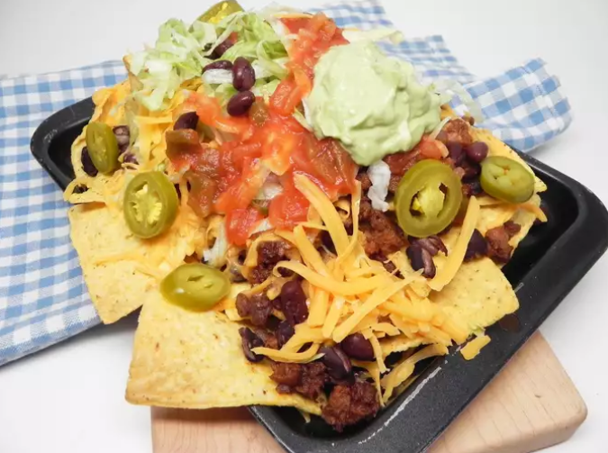

Nachos

Description
Who doesn't love nachos? Again, endless variations are possible.
Original recipe
Ingredients
- 3 ounces yellow corn tortilla chips
- 2 teaspoons olive oil
- ¼ (12 ounce) package ground beef vegetarian substitute (such as MorningStar®)
- 1 ½ teaspoons hot taco seasoning mix
- ½ cup black beans, rinsed and drained
- ⅔ cup shredded mild Cheddar cheese
- ½ cup shredded lettuce, or to taste
- ¼ cup purchased salsa
- 3 tablespoons purchased guacamole
- 1 tablespoon sliced jalapeno peppers, or to taste
Steps
- Preheat the oven to 350 degrees F (175 degrees C).
- Heat olive oil in a skillet over medium-high heat. Add ground beef substitute and fry for 1 to 2 minutes. Stir in water and taco seasoning. Continue to cook and stir until cooked through, about 8 more minutes.
- Place tortilla chips on an oven-safe plate and top with black beans. Add fried beef substitute and top with Cheddar cheese.
- Bake in the preheated oven until cheese is melted, about 5 minutes; make sure the chips do not burn.
- Remove from the oven and top with lettuce, salsa, guacamole, and jalapeno peppers.